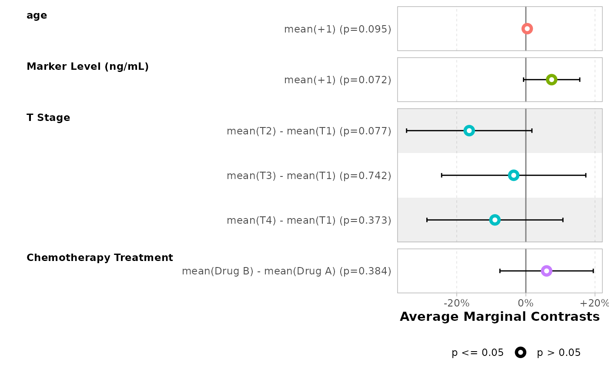
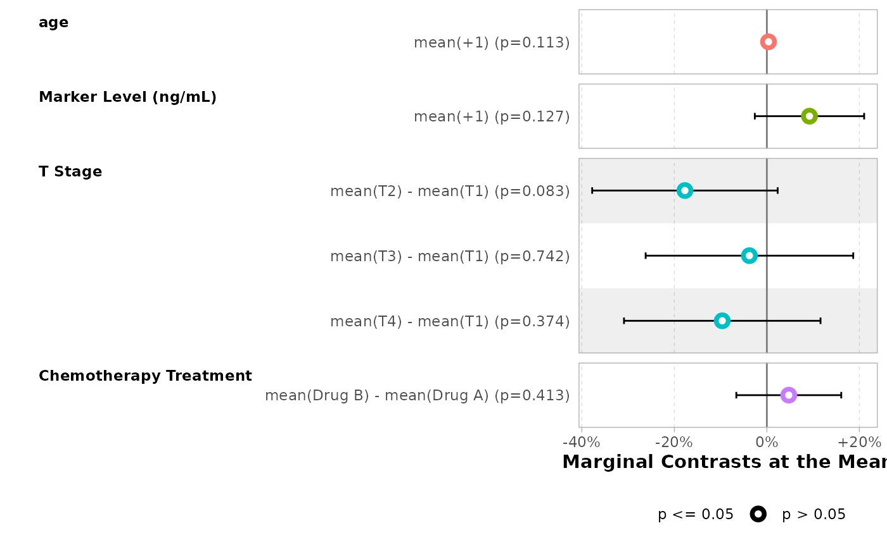
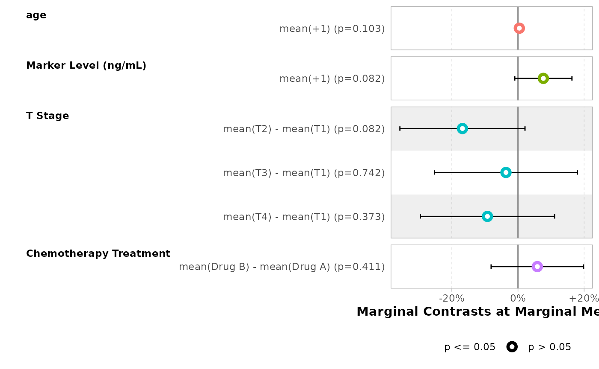
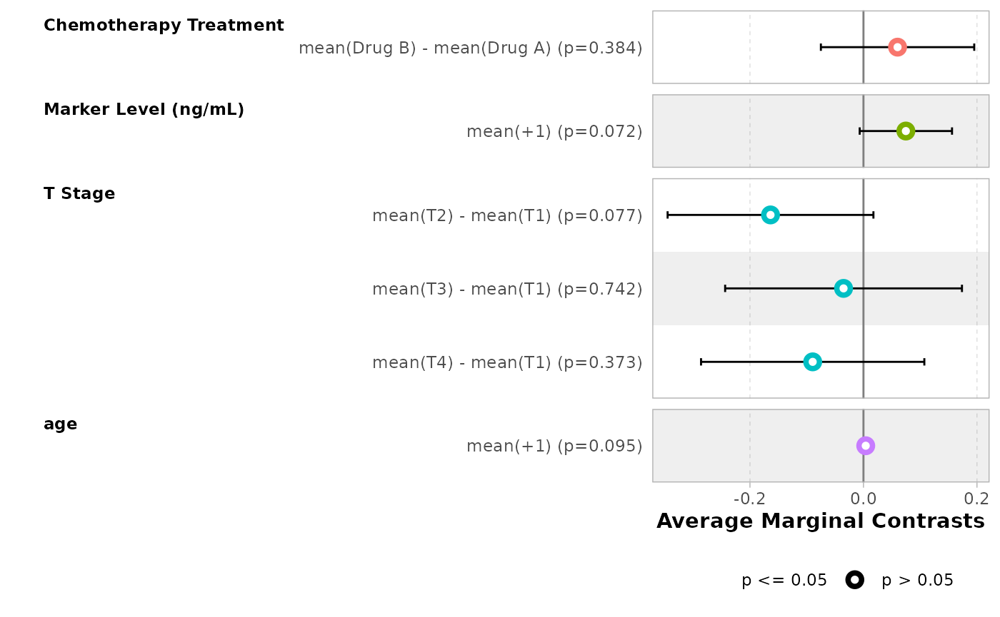
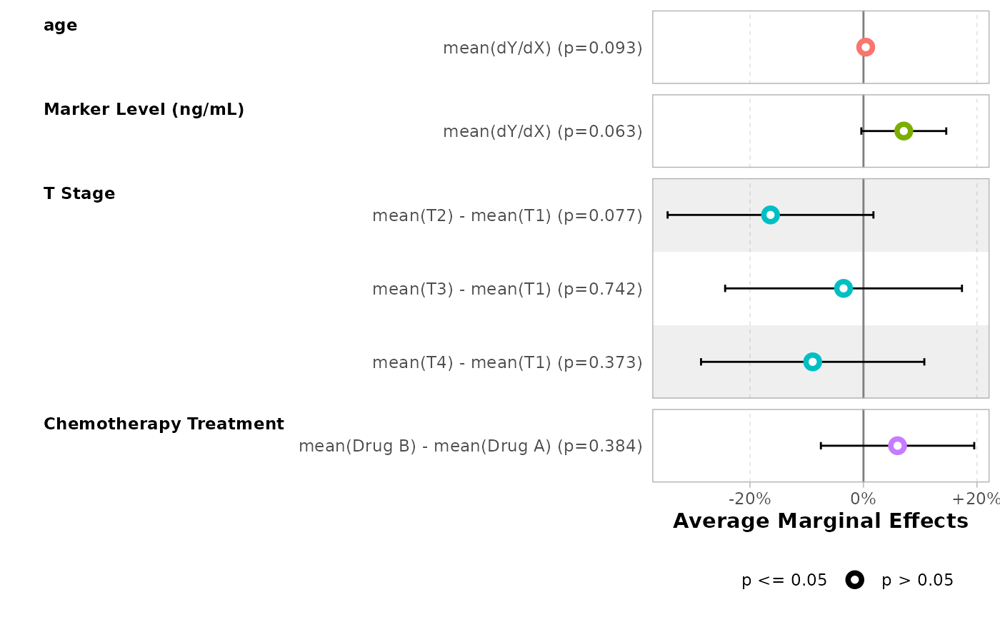

Marginal effects / slopes, contrasts, means and predictions with broom.helpers
Source:vignettes/articles/marginal_tidiers.Rmd
marginal_tidiers.RmdTerminology
The overall idea of “marginal effects” is too provide tools to better interpret the results of a model by estimating several quantities at the margins. However, it has been implemented in many different ways by different ways and there is a bunch of quasi-synonyms for the idea of “marginal effects”: statistical effects, marginal effects, marginal means, contrasts, marginal slopes, conditional effects, conditional marginal effects, marginal effects at the mean, and many other similarly-named ideas.
In broom.helpers, we tried to adopt a terminology
consistent with the {marginaleffects}
package, first released in September 2021, and with Andrew
Heiss’ Marginalia blog post published in May 2022.
Adjusted Predictions correspond to the outcome predicted by a fitted model on a specified scale for a given combination of values of the predictor variables, such as their observed values, their means, or factor levels (a.k.a. “reference grid”). When prediction are averaged according to a specific regressor, we will then refer to Marginal Predictions.
Marginal Contrasts are referring to a comparison (e.g. difference) of the outcome for a certain regressor, considering “meaningfully” or “typical” values for the other predictors (at the mean/mode, at custom values, averaged over observed values…). Contrasts could be computed for categorical variables (e.g. difference between two specific levels) or for continuous variables (change in the outcome for a certain change of the regressor).
Marginal Effects / Slopes are defined for continuous variables as a partial derivative (slope) of the regression equation with respect to a regressor of interest. Put differently, the marginal effect is the slope of the prediction function, measured at a specific value of the regressor of interest. In scientific practice, the marginal effects fall in the same toolbox as the marginal contrasts.
Marginal Means are adjusted predictions of a model, averaged across a “reference grid” of categorical predictors. They are similar to marginal predictions, but with subtle differences.
broom.helpers embed several custom tidiers to compute
such quantities and to return a tibble compatible with
tidy_plus_plus() and all others
broom.helpers’s tidy_*() function.
Therefore, it is possible to produce nicely formatted tables with
gtsummary::tbl_regression() or forest plots with
ggstats::ggcoef_model().
Data preparation
Let’s consider the trial dataset from the
gtsummary package and build a logistic regression model
with two categorical predictors (trt and
stage) and two continuous predictor (marker
and age). We will include an interaction between
trt and marker and polynomial terms for
age (i.e. age and age^2).
library(broom.helpers)
library(gtsummary)
library(dplyr)
d <- trial %>%
filter(complete.cases(response, trt, marker, grade, age))
mod <- glm(
response ~ trt * marker + stage + poly(age, 2),
data = d,
family = binomial
)
mod %>%
tbl_regression(
exponentiate = TRUE
) %>%
bold_labels()| Characteristic | OR1 | 95% CI1 | p-value |
|---|---|---|---|
| Chemotherapy Treatment | |||
| Drug A | — | — | |
| Drug B | 1.08 | 0.40, 2.98 | 0.9 |
| Marker Level (ng/mL) | 1.26 | 0.73, 2.17 | 0.4 |
| T Stage | |||
| T1 | — | — | |
| T2 | 0.44 | 0.17, 1.10 | 0.084 |
| T3 | 0.85 | 0.33, 2.18 | 0.7 |
| T4 | 0.66 | 0.26, 1.65 | 0.4 |
| age | |||
| age | 41.7 | 0.50, 4,791 | 0.11 |
| age² | 1.04 | 0.01, 94.1 | >0.9 |
| Chemotherapy Treatment * Marker Level (ng/mL) | |||
| Drug B * Marker Level (ng/mL) | 1.25 | 0.59, 2.68 | 0.6 |
| 1 OR = Odds Ratio, CI = Confidence Interval | |||
Marginal Predictions
Marginal Predictions at the Mean
A first approach to better understand / interpret the model consists to predict the value of a regressor, on the model scale, at “typical values” of the other regressors. The estimates are therefore easier to interpret, as they are expressed on the the scale of the outcome (here, for a binary logistic regression, as probabilities). The differences observed between the predictions at different modalities will depend only on the “effect” of that regressor as the others regressors will be fixed at the same “typical values”. However, all packages do not use the same definition of “typical values”.
the {effects}’s approach
The effects package offer an
effects::Effect() function to compute marginal predictions
at typical values. Although the function is named Effect(),
the produced estimates are marginal predictions according to the
terminology presented at the beginning of this vignette.
library(effects, quietly = TRUE)
#> lattice theme set by effectsTheme()
#> See ?effectsTheme for details.
e <- Effect("stage", mod)
e
#>
#> stage effect
#> stage
#> T1 T2 T3 T4
#> 0.3866154 0.2179846 0.3501056 0.2938566
plot(e)
To understand what are the “typical values” used by
effects::Effect(), let’s have a look at the model matrix
generated by the package and used for predictions.
e$model.matrix
#> (Intercept) trtDrug B marker stageT2 stageT3 stageT4 poly(age, 2)1
#> 1 1 0.5202312 0.9191792 0 0 0 -2.228704e-16
#> 2 1 0.5202312 0.9191792 1 0 0 -2.228704e-16
#> 3 1 0.5202312 0.9191792 0 1 0 -2.228704e-16
#> 4 1 0.5202312 0.9191792 0 0 1 -2.228704e-16
#> poly(age, 2)2 trtDrug B:marker
#> 1 -0.05568232 0.4781857
#> 2 -0.05568232 0.4781857
#> 3 -0.05568232 0.4781857
#> 4 -0.05568232 0.4781857
#> attr(,"assign")
#> [1] 0 1 2 3 3 3 4 4 5
#> attr(,"contrasts")
#> attr(,"contrasts")$trt
#> [1] "contr.treatment"
#>
#> attr(,"contrasts")$stage
#> [1] "contr.treatment"The other continuous regressors are set to their observed mean while
the other categorical regressors are weighted according to their
observed proportions. Somehow, an artificial “averaged” individual is
created, of mean age and mean marker level, and being partly receiving
Drug A and Drug B. And then, we predict the probability of
response if this individual would be in stage T1, T2, T3 or
T4.
For a continuous variable, effects::Effect() will
consider several values of the regressor (based on the range of observed
values) to estimate marginal predictions at these different values.
e2 <- Effect("age", mod)
e2
#>
#> age effect
#> age
#> 6 30 40 60 80
#> 0.1664397 0.2392447 0.2760557 0.3606351 0.4568567
plot(e2)
The effects::allEffects() will build all marginal
predictions of all regressors, taking into account eventual interactions
within the model.
allEffects(mod)
#> model: response ~ trt * marker + stage + poly(age, 2)
#>
#> stage effect
#> stage
#> T1 T2 T3 T4
#> 0.3866154 0.2179846 0.3501056 0.2938566
#>
#> age effect
#> age
#> 6 30 40 60 80
#> 0.1664397 0.2392447 0.2760557 0.3606351 0.4568567
#>
#> trt*marker effect
#> marker
#> trt 0.005 1 2 3 4
#> Drug A 0.2338204 0.2776269 0.3264017 0.3792467 0.4351208
#> Drug B 0.2479065 0.3408371 0.4484189 0.5610548 0.6677329
plot(allEffects(mod))
It is also possible to generate similar plots with
ggeffects::ggeffect(). Please note that
ggeffects::ggeffect() will consider, by default, only
individual variables from the model and not existing interactions.

To generate a tibble of these results formatted in a way that it
could be use with tidy_plus_plus() and other
broom.helpers’s tidy_*() helpers,
broom.helpers provides a tidy_all_effects()
tieder.
tidy_all_effects(mod)
#> variable term estimate std.error conf.low conf.high
#> 1 stage T1 0.3866154 0.08138561 0.24338626 0.5525749
#> 2 stage T2 0.2179846 0.06122617 0.12116925 0.3604304
#> 3 stage T3 0.3501056 0.08749758 0.20225147 0.5337316
#> 4 stage T4 0.2938566 0.07895328 0.16486445 0.4673012
#> 5 poly(age,2) 6 0.1664397 0.15368239 0.02226625 0.6364570
#> 6 poly(age,2) 30 0.2392447 0.05197357 0.15232129 0.3549982
#> 7 poly(age,2) 40 0.2760557 0.04346297 0.19934983 0.3686854
#> 8 poly(age,2) 60 0.3606351 0.05152656 0.26686307 0.4663957
#> 9 poly(age,2) 80 0.4568567 0.16663622 0.18404077 0.7582667
#> 10 trt:marker Drug A:0.005 0.2338204 0.07478345 0.11867604 0.4088555
#> 11 trt:marker Drug B:0.005 0.2479065 0.06818623 0.13864532 0.4029880
#> 12 trt:marker Drug A:1 0.2776269 0.05673207 0.18083471 0.4008740
#> 13 trt:marker Drug B:1 0.3408371 0.05901662 0.23605720 0.4638846
#> 14 trt:marker Drug A:2 0.3264017 0.08136674 0.19002540 0.5002087
#> 15 trt:marker Drug B:2 0.4484189 0.09615134 0.27508336 0.6352624
#> 16 trt:marker Drug A:3 0.3792467 0.13846045 0.16171930 0.6592599
#> 17 trt:marker Drug B:3 0.5610548 0.15197028 0.27607502 0.8107519
#> 18 trt:marker Drug A:4 0.4351208 0.20665349 0.12910815 0.8000955
#> 19 trt:marker Drug B:4 0.6677329 0.19316496 0.26727889 0.9171600It is therefore very easy to produce a nicely formatted table with
gtsummary::tbl_regression() or a forest plot with
ggstats::ggcoef_model().
mod %>%
tbl_regression(
tidy_fun = tidy_all_effects,
estimate_fun = scales::label_percent(accuracy = .1)
) %>%
bold_labels()| Characteristic | Marginal Predictions at the Mean | 95% CI1 |
|---|---|---|
| T Stage | ||
| T1 | 38.7% | 24.3%, 55.3% |
| T2 | 21.8% | 12.1%, 36.0% |
| T3 | 35.0% | 20.2%, 53.4% |
| T4 | 29.4% | 16.5%, 46.7% |
| Chemotherapy Treatment * Marker Level (ng/mL) | ||
| Drug A * 0.005 | 23.4% | 11.9%, 40.9% |
| Drug B * 0.005 | 24.8% | 13.9%, 40.3% |
| Drug A * 1 | 27.8% | 18.1%, 40.1% |
| Drug B * 1 | 34.1% | 23.6%, 46.4% |
| Drug A * 2 | 32.6% | 19.0%, 50.0% |
| Drug B * 2 | 44.8% | 27.5%, 63.5% |
| Drug A * 3 | 37.9% | 16.2%, 65.9% |
| Drug B * 3 | 56.1% | 27.6%, 81.1% |
| Drug A * 4 | 43.5% | 12.9%, 80.0% |
| Drug B * 4 | 66.8% | 26.7%, 91.7% |
| 1 CI = Confidence Interval | ||
ggstats::ggcoef_model(
mod,
tidy_fun = tidy_all_effects,
vline = FALSE
)
the {marginaleffects}’s approach at the Mean
The marginaleffects package allows to compute marginal
predictions “at the mean”, i.e. by considering the mean of the other
continuous regressors and the mode (i.e. the most frequent observed
modality) of categorical regressors. For that, we should call
marginaleffects::predictions() with
newdata = "mean".
library(marginaleffects)
predictions(
mod,
variables = "stage",
newdata = "mean",
by = "stage"
)
#>
#> stage Estimate Pr(>|z|) S 2.5 % 97.5 %
#> T1 0.419 0.39097 1.4 0.254 0.604
#> T2 0.242 0.00282 8.5 0.131 0.403
#> T4 0.322 0.06889 3.9 0.176 0.514
#> T3 0.381 0.24194 2.0 0.215 0.581
#>
#> Columns: stage, estimate, p.value, s.value, conf.low, conf.high
#> Type: invlink(link)Four “mean individuals” were generated, with just the value of
stage being different from one individual to the other,
before predicting the probability of response.
For a continuous variable, predictions will be made, by default, at Tukey’s five numbers, i.e. the minimum, the first quartile, the median, the third quartile and the maximum.
predictions(
mod,
variables = "age",
newdata = "mean",
by = "age"
)
#>
#> age Estimate Pr(>|z|) S 2.5 % 97.5 %
#> 6 0.127 0.10655 3.2 0.0139 0.602
#> 37 0.208 < 0.001 10.2 0.1072 0.365
#> 47 0.242 0.00286 8.5 0.1310 0.403
#> 57 0.280 0.01347 6.2 0.1550 0.451
#> 83 0.395 0.62840 0.7 0.1042 0.786
#>
#> Columns: age, estimate, p.value, s.value, conf.low, conf.high
#> Type: invlink(link)broom.helpers provides a global tidier
tidy_marginal_predictions() to compute the marginal
predictions for each variable or combination of variables before
stacking them in a unique tibble. You should specify
newdata = "mean" to get marginal predictions at the mean.
By default, as effects::allEffects(), it will consider all
higher order combinations of variables (as identified with
model_list_higher_order_variables()).
mod %>%
model_list_higher_order_variables()
#> [1] "stage" "age" "trt:marker"
mod %>%
tbl_regression(
tidy_fun = tidy_marginal_predictions,
newdata = "mean",
estimate_fun = scales::label_percent(accuracy = .1)
) %>%
modify_column_hide("p.value") %>%
bold_labels()| Characteristic | Marginal Predictions at the Mean | 95% CI1 |
|---|---|---|
| T Stage | ||
| T1 | 41.9% | 25.4%, 60.4% |
| T2 | 24.2% | 13.1%, 40.3% |
| T3 | 38.1% | 21.5%, 58.1% |
| T4 | 32.2% | 17.6%, 51.4% |
| age | ||
| 6 | 12.7% | 1.4%, 60.2% |
| 37 | 20.8% | 10.7%, 36.5% |
| 47 | 24.2% | 13.1%, 40.3% |
| 57 | 28.0% | 15.5%, 45.1% |
| 83 | 39.5% | 10.4%, 78.6% |
| Chemotherapy Treatment * Marker Level (ng/mL) | ||
| Drug A * 0.005 | 16.3% | 6.6%, 35.0% |
| Drug A * 0.215 | 17.0% | 7.3%, 34.6% |
| Drug A * 0.662 | 18.5% | 8.9%, 34.6% |
| Drug A * 1.406 | 21.3% | 10.7%, 37.7% |
| Drug A * 3.874 | 32.4% | 8.3%, 71.7% |
| Drug B * 0.005 | 17.4% | 7.6%, 35.2% |
| Drug B * 0.215 | 18.8% | 8.8%, 35.9% |
| Drug B * 0.662 | 22.1% | 11.5%, 38.2% |
| Drug B * 1.406 | 28.4% | 15.7%, 46.0% |
| Drug B * 3.874 | 54.8% | 18.9%, 86.4% |
| 1 CI = Confidence Interval | ||
Simply specify variables_list = "no_interaction" to
compute marginal predictions for each individual variable without
considering existing interactions.
mod %>%
tbl_regression(
tidy_fun = tidy_marginal_predictions,
variables_list = "no_interaction",
newdata = "mean",
estimate_fun = scales::label_percent(accuracy = .1)
) %>%
modify_column_hide("p.value") %>%
bold_labels()| Characteristic | Marginal Predictions at the Mean | 95% CI1 |
|---|---|---|
| Chemotherapy Treatment | ||
| Drug A | 19.4% | 9.7%, 35.1% |
| Drug B | 24.2% | 13.1%, 40.3% |
| Marker Level (ng/mL) | ||
| 0.005 | 17.4% | 7.6%, 35.2% |
| 0.215 | 18.8% | 8.8%, 35.9% |
| 0.662 | 22.1% | 11.5%, 38.2% |
| 1.406 | 28.4% | 15.6%, 46.0% |
| 3.874 | 54.8% | 18.9%, 86.4% |
| T Stage | ||
| T1 | 41.9% | 25.4%, 60.4% |
| T2 | 24.2% | 13.1%, 40.3% |
| T3 | 38.1% | 21.5%, 58.1% |
| T4 | 32.2% | 17.6%, 51.4% |
| age | ||
| 6 | 12.7% | 1.4%, 60.2% |
| 37 | 20.8% | 10.7%, 36.5% |
| 47 | 24.2% | 13.1%, 40.3% |
| 57 | 28.0% | 15.5%, 45.1% |
| 83 | 39.5% | 10.4%, 78.6% |
| 1 CI = Confidence Interval | ||
broom.helpers also include
plot_marginal_predictions() to generate a list of plots to
visualize all marginal predictions. Use
patchwork::wrap_plots() to combine all plots together.
p <- plot_marginal_predictions(mod, newdata = "mean") %>%
patchwork::wrap_plots() &
ggplot2::scale_y_continuous(
labels = scales::label_percent(),
limits = c(-0.2, 1)
)
p + patchwork::plot_annotation(
title = "Marginal Predictions at the Mean"
)
p <- mod %>%
plot_marginal_predictions(
"no_interaction",
newdata = "mean"
) %>%
patchwork::wrap_plots() &
ggplot2::scale_y_continuous(
labels = scales::label_percent(),
limits = c(-0.2, 1)
)
p + patchwork::plot_annotation(
title = "Marginal Predictions at the Mean"
)
Alternatively, you can use ggstats::ggcoef_model(),
using tidy_args to pass arguments to
broom.helpers::tidy_marginal_predictions().
ggstats::ggcoef_model(
mod,
tidy_fun = tidy_marginal_predictions,
tidy_args = list(newdata = "mean", variables_list = "no_interaction"),
vline = FALSE,
show_p_values = FALSE,
signif_stars = FALSE,
significance = NULL
)
Average Marginal Predictions
Instead of averaging observed values to generate “typical observations” before predicting the outcome, an alternative consists to predict the outcome on the overall observed values before averaging the results.
More precisely, the purpose is to adopt a counterfactual approach.
Let’s take an example. Let’s consider d our observed data
used to estimate the model. We can make a copy of this dataset, where
all variables would be identical, but considering that all individuals
have received Drug A. Similarly, we could generate a dataset where all
individuals would have received Drug B.
We can now predict the outcome for all observations in
dA and then compute the average, and similarly with
dB.
predict(mod, newdata = dA, type = "response") %>% mean()
#> [1] 0.2830866
predict(mod, newdata = dB, type = "response") %>% mean()
#> [1] 0.3431492We, then, obtain Average Marginal Predictions for
trt. The same results could be computed with
marginaleffects::avg_predictions(). Note that the
counterfactual approach corresponds to the default behavior when no
value is provided to newdata.
avg_predictions(mod, variables = "trt", by = "trt", type = "response")
#>
#> trt Estimate Std. Error z Pr(>|z|) S 2.5 % 97.5 %
#> Drug A 0.283 0.0484 5.85 <0.001 27.6 0.188 0.378
#> Drug B 0.343 0.0490 7.01 <0.001 38.6 0.247 0.439
#>
#> Columns: trt, estimate, std.error, statistic, p.value, s.value, conf.low, conf.high
#> Type: responseImportant: since version 0.10.0 of
marginaleffects, we had to add
type = "response" to get this result: for glm
models, predictions are done on the response scale, before being
averaged. If type are not specified, predictions will be
made on the link scale, before being averaged and then back transformed
on the response scale. Thus, the average prediction may not be exactly
identical to the average of predictions.
avg_predictions(mod, variables = "trt", by = "trt")
#>
#> trt Estimate Pr(>|z|) S 2.5 % 97.5 %
#> Drug A 0.274 < 0.001 13.1 0.187 0.383
#> Drug B 0.333 0.00279 8.5 0.241 0.441
#>
#> Columns: trt, estimate, p.value, s.value, conf.low, conf.high
#> Type: invlink(link)
b <- binomial()
predict(mod, newdata = dA, type = "link") %>%
mean() %>%
b$linkinv()
#> [1] 0.2743123
predict(mod, newdata = dB, type = "link") %>%
mean() %>%
b$linkinv()
#> [1] 0.3331447We can use tidy_marginal_predictions() to get average
marginal predictions for all variables and
plot_marginal_predictions() for a visual
representation.
mod %>%
tbl_regression(
tidy_fun = tidy_marginal_predictions,
type = "response",
variables_list = "no_interaction",
estimate_fun = scales::label_percent(accuracy = .1)
) %>%
modify_column_hide("p.value") %>%
bold_labels()| Characteristic | Average Marginal Predictions | 95% CI1 |
|---|---|---|
| Chemotherapy Treatment | ||
| Drug A | 28.3% | 18.8%, 37.8% |
| Drug B | 34.3% | 24.7%, 43.9% |
| Marker Level (ng/mL) | ||
| 0.005 | 25.0% | 15.9%, 34.0% |
| 0.215 | 26.3% | 18.0%, 34.6% |
| 0.662 | 29.3% | 22.3%, 36.4% |
| 1.406 | 34.8% | 26.8%, 42.8% |
| 3.874 | 54.5% | 28.5%, 80.4% |
| T Stage | ||
| T1 | 38.9% | 24.9%, 52.9% |
| T2 | 22.5% | 11.2%, 33.8% |
| T3 | 35.4% | 20.0%, 50.8% |
| T4 | 30.0% | 16.1%, 43.8% |
| age | ||
| 6 | 17.4% | -12.9%, 47.6% |
| 37 | 27.1% | 18.8%, 35.4% |
| 47 | 30.9% | 22.4%, 39.5% |
| 57 | 35.1% | 26.0%, 44.2% |
| 83 | 47.1% | 10.0%, 84.2% |
| 1 CI = Confidence Interval | ||
mod %>%
tbl_regression(
tidy_fun = tidy_marginal_predictions,
type = "response",
estimate_fun = scales::label_percent(accuracy = .1)
) %>%
modify_column_hide("p.value") %>%
bold_labels()| Characteristic | Average Marginal Predictions | 95% CI1 |
|---|---|---|
| T Stage | ||
| T1 | 38.9% | 24.9%, 52.9% |
| T2 | 22.5% | 11.2%, 33.8% |
| T3 | 35.4% | 20.0%, 50.8% |
| T4 | 30.0% | 16.1%, 43.8% |
| age | ||
| 6 | 17.4% | -12.9%, 47.6% |
| 37 | 27.1% | 18.8%, 35.4% |
| 47 | 30.9% | 22.4%, 39.5% |
| 57 | 35.1% | 26.0%, 44.2% |
| 83 | 47.1% | 10.0%, 84.2% |
| Chemotherapy Treatment * Marker Level (ng/mL) | ||
| Drug A * 0.005 | 24.2% | 10.9%, 37.6% |
| Drug A * 0.215 | 25.1% | 13.0%, 37.3% |
| Drug A * 0.662 | 27.0% | 16.9%, 37.2% |
| Drug A * 1.406 | 30.5% | 19.9%, 41.0% |
| Drug A * 3.874 | 43.1% | 5.7%, 80.5% |
| Drug B * 0.005 | 25.6% | 13.4%, 37.9% |
| Drug B * 0.215 | 27.4% | 16.2%, 38.7% |
| Drug B * 0.662 | 31.5% | 21.6%, 41.3% |
| Drug B * 1.406 | 38.8% | 26.9%, 50.7% |
| Drug B * 3.874 | 64.9% | 29.3%, 100.6% |
| 1 CI = Confidence Interval | ||
p <- plot_marginal_predictions(mod, type = "response") %>%
patchwork::wrap_plots(ncol = 2) &
ggplot2::scale_y_continuous(
labels = scales::label_percent(),
limits = c(-0.2, 1)
)
p + patchwork::plot_annotation(
title = "Average Marginal Predictions"
)
Marginal Means and Marginal Predictions at Marginal Means
The emmeans package adopted, by default, another approach based on marginal means or estimated marginal means (a.k.a. emmeans).
It will consider a grid of predictors with all combinations of the observed modalities of the categorical variables and fixing continuous variables at their means.
Let’s call marginaleffects::predictions() with
newdata = "marginalmeans".
pred <- predictions(mod, newdata = "marginalmeans")
pred
#>
#> Estimate Pr(>|z|) S 2.5 % 97.5 %
#> 0.353 0.11462 3.1 0.2042 0.537
#> 0.194 < 0.001 10.8 0.0969 0.351
#> 0.265 0.01648 5.9 0.1351 0.453
#> 0.318 0.07405 3.8 0.1678 0.519
#> 0.419 0.39097 1.4 0.2541 0.604
#> 0.242 0.00282 8.5 0.1308 0.403
#> 0.322 0.06889 3.9 0.1760 0.514
#> 0.381 0.24194 2.0 0.2147 0.581
#>
#> Columns: rowid, estimate, p.value, s.value, conf.low, conf.high, response, trt, marker, stage, age
#> Type: invlink(link)As we can see, pred contains 8 rows, one for each
combination of trt (2 modalities) and stage (4
modalities). age is fixed at his mean
(mean(d$age)) as well as marker.
Let’s compute the average predictions for each value of
stage.
pred %>%
group_by(stage) %>%
summarise(mean(estimate))
#> # A tibble: 4 × 2
#> stage `mean(estimate)`
#> <fct> <dbl>
#> 1 T1 0.386
#> 2 T2 0.218
#> 3 T3 0.349
#> 4 T4 0.294We can check that we obtain the same estimates as with
emmeans::emmeans().
emmeans::emmeans(mod, "stage", type = "response")
#> stage prob SE df asymp.LCL asymp.UCL
#> T1 0.385 0.0813 Inf 0.242 0.551
#> T2 0.217 0.0611 Inf 0.120 0.359
#> T3 0.349 0.0874 Inf 0.201 0.532
#> T4 0.293 0.0788 Inf 0.164 0.466
#>
#> Results are averaged over the levels of: trt
#> Confidence level used: 0.95
#> Intervals are back-transformed from the logit scaleThe function marginaleffects::marginal_means() allows to
compute directly marginal means of all categorical variables.
marginal_means(mod)
#> Warning: 'marginal_means' is deprecated.
#> Use '
#> predictions(mod,
#> by = "x",
#> newdata = datagrid(grid_type = "balanced"))
#> ' instead.
#> See help("Deprecated")
#> term value estimate p.value s.value conf.low conf.high
#> 1 trt Drug A 0.2781517 0.0008833559 10.144718 0.1800891 0.4033437
#> 2 trt Drug B 0.3374247 0.0103823598 6.589722 0.2331070 0.4603997
#> 3 stage T1 0.3852784 0.1733837675 2.527959 0.2423543 0.5511724
#> 4 stage T2 0.2170244 0.0003619524 11.431912 0.1204435 0.3594053
#> 5 stage T3 0.3488230 0.1047470398 3.255019 0.2012702 0.5324396
#> 6 stage T4 0.2926873 0.0205018762 5.608100 0.1640007 0.4660576broom.helpers provides a
tidy_marginal_means() tidier.
mod %>%
tbl_regression(
tidy_fun = tidy_marginal_means,
estimate_fun = scales::label_percent(accuracy = .1)
) %>%
modify_column_hide("p.value") %>%
bold_labels()
#> Warning: 'function (model, variables = NULL, newdata = NULL, vcov = TRUE, conf_level = 0.95, type = NULL, transform = NULL, cross = FALSE, hypothesis = NULL, equivalence = NULL, p_adjust = NULL, df = Inf, wts = "equal", by = NULL, numderiv = "fdforward", ...)
#> {
#> .Deprecated("\npredictions(mod,\n by = \"x\",\n newdata = datagrid(grid_type = \"balanced\"))\n")
#> dots <- list(...)
#> sanity_equivalence_p_adjust(equivalence, p_adjust)
#> if ("transform_post" %in% names(dots))
#> transform <- dots[["transform_post"]]
#> if ("variables_grid" %in% names(dots)) {
#> if (!is.null(newdata)) {
#> insight::format_error("The `variables_grid` argument and has been replaced by `newdata`. These two arguments cannot be used simultaneously.")
#> }
#> newdata <- dots[["variables_grid"]]
#> }
#> if (!is.null(equivalence) && !is.null(p_adjust)) {
#> insight::format_error("The `equivalence` and `p_adjust` arguments cannot be used together.")
#> }
#> numderiv = sanitize_numderiv(numderiv)
#> call_attr <- c(list(name = "marginal_means", model = model, newdata = newdata, variables = variables, type = type, vcov = vcov, by = by, conf_level = conf_level, transform = transform, wts = wts, hypothesis = hypothesis, equivalence = equivalence, p_adjust = p_adjust, df = df), list(...))
#> call_attr <- do.call("call", call_attr)
#> if (inherits(model, c("mira", "amest"))) {
#> out <- process_imputation(model, call_attr, marginal_means = TRUE)
#> return(out)
#> }
#> type_string <- sanitize_type(model = model, type = type, calling_function = "marginal_means")
#> if (type_string == "invlink(link)") {
#> if (is.null(hypothesis)) {
#> type_call <- "link"
#> }
#> else {
#> type_call <- "response"
#> type_string <- "response"
#> insight::format_warning("The `type=\"invlink\"` argument is not available unless `hypothesis` is `NULL` or a single number. The value of the `type` argument was changed to \"response\" automatically. To suppress this warning, use `type=\"response\"` explicitly in your function call.")
#> }
#> }
#> else {
#> type_call <- type_string
#> }
#> modeldata <- get_modeldata(model, additional_variables = FALSE, wts = wts)
#> checkmate::assert_flag(cross)
#> transform <- sanitize_transform(transform)
#> conf_level <- sanitize_conf_level(conf_level, ...)
#> model <- sanitize_model(model, vcov = vcov, calling_function = "marginalmeans")
#> checkmate::assert_choice(wts, choices = c("equal", "cells", "proportional"))
#> if (wts != "equal" && is.data.frame(newdata)) {
#> insight::format_error("The `wts` argument must be \"equal\" when `newdata` is a data frame.")
#> }
#> tmp <- sanitize_hypothesis(hypothesis, ...)
#> hypothesis <- tmp$hypothesis
#> hypothesis_null <- tmp$hypothesis_null
#> sanity_dots(model = model, ...)
#> if (inherits(model, c("brmsfit", "bart"))) {
#> insight::format_error("This model object type is not yet supported by the `marginal_means` function.")
#> }
#> vcov_false <- isTRUE(vcov == FALSE)
#> vcov <- get_vcov(model, vcov = vcov, type = type, ...)
#> checkmate::assert_character(variables, min.len = 1, null.ok = TRUE)
#> if (any(variables %in% insight::find_response(model))) {
#> insight::format_error("The `variables` vector cannot include the response.")
#> }
#> if (is.null(variables)) {
#> variables <- insight::find_predictors(model, flatten = TRUE)
#> }
#> idx <- vapply(variables, FUN = get_variable_class, newdata = modeldata, FUN.VALUE = logical(1), compare = c("logical", "character", "factor"))
#> focal <- variables[idx]
#> if (length(focal) == 0) {
#> insight::format_error("No categorical predictor was found in the model data or `variables` argument.")
#> }
#> checkmate::assert(checkmate::check_null(newdata), checkmate::check_character(newdata), checkmate::check_data_frame(newdata))
#> if (is.null(newdata)) {
#> nonfocal <- insight::find_predictors(model, flatten = TRUE)
#> nonfocal <- setdiff(nonfocal, focal)
#> }
#> else if (is.character(newdata)) {
#> if (!all(newdata %in% colnames(modeldata))) {
#> insight::format_error("Some of the variables in `newdata` are missing from the data used to fit the model.")
#> }
#> nonfocal <- setdiff(newdata, focal)
#> }
#> else if (is.data.frame(newdata)) {
#> nonfocal <- colnames(newdata)
#> }
#> idx <- vapply(nonfocal, FUN = get_variable_class, newdata = modeldata, FUN.VALUE = logical(1), compare = c("logical", "character", "factor"))
#> nonfocal <- nonfocal[idx]
#> args <- list(model = model)
#> if (is.data.frame(newdata)) {
#> for (v in focal) {
#> args[[v]] <- unique(modeldata[[v]])
#> }
#> newgrid <- do.call(datagridcf, args)
#> }
#> else {
#> for (v in c(focal, nonfocal)) {
#> args[[v]] <- unique(modeldata[[v]])
#> }
#> newgrid <- do.call(datagrid, args)
#> }
#> checkmate::assert_data_frame(by, null.ok = TRUE)
#> sanity_by(by, newgrid)
#> if (identical(wts, "equal")) {
#> newgrid[["wts"]] <- 1
#> }
#> else if (identical(wts, "proportional")) {
#> wtsgrid <- copy(data.table(modeldata)[, ..nonfocal])
#> idx <- nonfocal
#> wtsgrid[, `:=`(N, .N)]
#> wtsgrid[, `:=`("wts", .N/N), by = idx]
#> for (v in colnames(newgrid)) {
#> if (v %in% colnames(wtsgrid) && is.factor(newgrid[[v]])) {
#> wtsgrid[[v]] <- factor(wtsgrid[[v]], levels = levels(newgrid[[v]]))
#> }
#> }
#> wtsgrid <- unique(wtsgrid)
#> newgrid <- merge(newgrid, wtsgrid, all.x = TRUE)
#> newgrid[["wts"]][is.na(newgrid[["wts"]])] <- 0
#> }
#> else if (identical(wts, "cells")) {
#> idx <- c(focal, nonfocal)
#> wtsgrid <- copy(data.table(modeldata)[, ..idx])
#> if (length(idx) == 0) {
#> newgrid[["wts"]] <- 1
#> return(newgrid)
#> }
#> else {
#> wtsgrid <- data.table(modeldata)[, .(wts = .N), by = idx][, `:=`(wts, wts/sum(wts))]
#> for (v in colnames(newgrid)) {
#> if (v %in% colnames(wtsgrid) && is.factor(newgrid[[v]])) {
#> wtsgrid[[v]] <- factor(wtsgrid[[v]], levels = levels(newgrid[[v]]))
#> }
#> }
#> wtsgrid <- unique(wtsgrid)
#> newgrid <- merge(newgrid, wtsgrid, all.x = TRUE)
#> newgrid[["wts"]][is.na(newgrid[["wts"]])] <- 0
#> }
#> }
#> args <- list(model = model, newdata = newgrid, type = type_call, variables = focal, cross = cross, hypothesis = hypothesis, by = by, modeldata = modeldata)
#> args <- c(args, list(...))
#> args[["equivalence"]] <- NULL
#> mm <- do.call(get_marginalmeans, args)
#> out <- as.data.frame(mm)
#> if (!vcov_false) {
#> args <- list(model, vcov = vcov, type = type_call, FUN = get_se_delta_marginalmeans, index = NULL, variables = focal, newdata = newgrid, cross = cross, modeldata = modeldata, hypothesis = hypothesis, by = by, numderiv = numderiv)
#> args <- c(args, list(...))
#> args[["equivalence"]] <- NULL
#> se <- do.call(get_se_delta, args)
#> out[["std.error"]] <- as.numeric(se)
#> J <- attr(se, "jacobian")
#> }
#> else {
#> J <- NULL
#> }
#> out <- get_ci(out, conf_level = conf_level, vcov = vcov, null_hypothesis = hypothesis_null, df = df, p_adjust = p_adjust, model = model, ...)
#> out <- equivalence(out, equivalence = equivalence, df = df, ...)
#> if (identical(type_string, "invlink(link)")) {
#> linv <- tryCatch(insight::link_inverse(model), error = function(e) identity)
#> out <- backtransform(out, transform = linv)
#> }
#> out <- backtransform(out, transform)
#> cols <- c("rowid", "group", colnames(by), "term", "hypothesis", "value", variables, "estimate", "std.error", "statistic", "p.value", "s.value", "conf.low", "conf.high", sort(colnames(out)))
#> cols <- unique(cols)
#> cols <- intersect(cols, colnames(out))
#> out <- out[, cols, drop = FALSE]
#> attr(out, "model") <- model
#> attr(out, "jacobian") <- J
#> attr(out, "type") <- type_string
#> attr(out, "model_type") <- class(model)[1]
#> attr(out, "variables") <- variables
#> attr(out, "call") <- call_attr
#> attr(out, "conf_level") <- conf_level
#> attr(out, "transform_label") <- names(transform)[1]
#> if (isTRUE(cross)) {
#> attr(out, "variables_grid") <- setdiff(nonfocal, variables)
#> }
#> else {
#> attr(out, "variables_grid") <- unique(c(nonfocal, variables))
#> }
#> if (inherits(model, "brmsfit")) {
#> insight::check_if_installed("brms")
#> attr(out, "nchains") <- brms::nchains(model)
#> }
#> class(out) <- c("marginalmeans", class(out))
#> return(out)
#> }' is deprecated.
#> Use '
#> predictions(mod,
#> by = "x",
#> newdata = datagrid(grid_type = "balanced"))
#> ' instead.
#> See help("Deprecated")| Characteristic | Marginal Means | 95% CI1 |
|---|---|---|
| Chemotherapy Treatment | ||
| Drug A | 27.8% | 18.0%, 40.3% |
| Drug B | 33.7% | 23.3%, 46.0% |
| T Stage | ||
| T1 | 38.5% | 24.2%, 55.1% |
| T2 | 21.7% | 12.0%, 35.9% |
| T3 | 34.9% | 20.1%, 53.2% |
| T4 | 29.3% | 16.4%, 46.6% |
| 1 CI = Confidence Interval | ||
Marginal means are defined only for categorical variables. However,
we can define marginal predictions at marginal means
for both continuous and categorical variables, calling
tidy_marginal_predictions() with the option
newdata = "marginalmeans". For categorical variables,
marginal predictions at marginal means will be equal to marginal
means.
mod %>%
tbl_regression(
tidy_fun = tidy_marginal_predictions,
newdata = "marginalmeans",
variables_list = "no_interaction",
estimate_fun = scales::label_percent(accuracy = .1)
) %>%
modify_column_hide("p.value") %>%
bold_labels()| Characteristic | Marginal Predictions at Marginal Means | 95% CI1 |
|---|---|---|
| Chemotherapy Treatment | ||
| Drug A | 27.8% | 18.0%, 40.3% |
| Drug B | 33.7% | 23.3%, 46.0% |
| Marker Level (ng/mL) | ||
| 0.005 | 24.5% | 15.3%, 36.8% |
| 0.215 | 25.8% | 17.0%, 37.2% |
| 0.662 | 28.9% | 20.6%, 38.8% |
| 1.406 | 34.4% | 25.2%, 44.8% |
| 3.874 | 54.9% | 27.9%, 79.3% |
| T Stage | ||
| T1 | 38.5% | 24.2%, 55.1% |
| T2 | 21.7% | 12.0%, 35.9% |
| T3 | 34.9% | 20.1%, 53.2% |
| T4 | 29.3% | 16.4%, 46.6% |
| age | ||
| 6 | 16.9% | 2.3%, 64.0% |
| 37 | 26.8% | 19.0%, 36.3% |
| 47 | 30.7% | 22.5%, 40.4% |
| 57 | 35.1% | 26.2%, 45.1% |
| 83 | 47.6% | 16.1%, 81.1% |
| 1 CI = Confidence Interval | ||
Alternative approaches
Marginal Predictions at the Median
They are similar to marginal predictions at the mean, except that
continuous variables are fixed at the median of observed values (and
categorical variables at their mode). Simply use
newdata = "median".
mod %>%
tbl_regression(
tidy_fun = tidy_marginal_predictions,
newdata = "median",
variables_list = "no_interaction",
estimate_fun = scales::label_percent(accuracy = .1)
) %>%
modify_column_hide("p.value") %>%
bold_labels()| Characteristic | Marginal Predictions | 95% CI1 |
|---|---|---|
| Chemotherapy Treatment | ||
| Drug A | 18.5% | 8.9%, 34.6% |
| Drug B | 22.1% | 11.5%, 38.3% |
| Marker Level (ng/mL) | ||
| 0.005 | 17.4% | 7.6%, 35.2% |
| 0.215 | 18.8% | 8.8%, 35.9% |
| 0.662 | 22.1% | 11.5%, 38.3% |
| 1.406 | 28.5% | 15.7%, 46.0% |
| 3.874 | 54.9% | 18.9%, 86.4% |
| T Stage | ||
| T1 | 39.1% | 23.2%, 57.7% |
| T2 | 22.1% | 11.5%, 38.3% |
| T3 | 35.5% | 19.3%, 55.7% |
| T4 | 29.8% | 16.0%, 48.7% |
| age | ||
| 6 | 11.5% | 1.2%, 57.6% |
| 37 | 19.0% | 9.4%, 34.6% |
| 47 | 22.1% | 11.5%, 38.3% |
| 57 | 25.7% | 13.7%, 42.9% |
| 83 | 36.8% | 9.3%, 76.6% |
| 1 CI = Confidence Interval | ||
the ggeffects::ggpredict()’s approach
The ggeffects package offers a
ggeffects::ggpredict() function which generates marginal
predictions at the mean of continuous variables and at the first
modality (used as reference) of categorical variables.
broom.helpers provides a tidy_ggpredict()
tidier.
mod %>%
tbl_regression(
tidy_fun = tidy_ggpredict,
estimate_fun = scales::label_percent(accuracy = .1)
) %>%
bold_labels()| Characteristic | Marginal Predictions | 95% CI1 |
|---|---|---|
| Chemotherapy Treatment | ||
| Drug A | 35.3% | 20.4%, 53.7% |
| Drug B | 41.9% | 25.4%, 60.4% |
| Marker Level (ng/mL) | ||
| 0.005 | 32.3% | 16.7%, 53.1% |
| 0.013 | 32.3% | 16.8%, 53.2% |
| 0.015 | 32.4% | 16.8%, 53.2% |
| 0.021 | 32.4% | 16.8%, 53.2% |
| 0.022 | 32.4% | 16.9%, 53.2% |
| 0.039 | 32.6% | 17.0%, 53.3% |
| 0.043 | 32.6% | 17.1%, 53.3% |
| 0.045 | 32.7% | 17.1%, 53.3% |
| 0.046 | 32.7% | 17.1%, 53.3% |
| 0.056 | 32.8% | 17.2%, 53.4% |
| 0.06 | 32.8% | 17.2%, 53.4% |
| 0.062 | 32.8% | 17.3%, 53.4% |
| 0.063 | 32.8% | 17.3%, 53.4% |
| 0.066 | 32.9% | 17.3%, 53.4% |
| 0.075 | 33.0% | 17.4%, 53.5% |
| 0.081 | 33.0% | 17.5%, 53.5% |
| 0.086 | 33.1% | 17.5%, 53.5% |
| 0.092 | 33.1% | 17.6%, 53.5% |
| 0.096 | 33.2% | 17.6%, 53.6% |
| 0.105 | 33.3% | 17.7%, 53.6% |
| 0.108 | 33.3% | 17.7%, 53.6% |
| 0.124 | 33.5% | 17.9%, 53.7% |
| 0.128 | 33.5% | 17.9%, 53.7% |
| 0.131 | 33.5% | 18.0%, 53.7% |
| 0.136 | 33.6% | 18.0%, 53.8% |
| 0.141 | 33.6% | 18.1%, 53.8% |
| 0.144 | 33.7% | 18.1%, 53.8% |
| 0.153 | 33.7% | 18.2%, 53.9% |
| 0.157 | 33.8% | 18.2%, 53.9% |
| 0.16 | 33.8% | 18.3%, 53.9% |
| 0.161 | 33.8% | 18.3%, 53.9% |
| 0.169 | 33.9% | 18.3%, 54.0% |
| 0.175 | 34.0% | 18.4%, 54.0% |
| 0.177 | 34.0% | 18.4%, 54.0% |
| 0.182 | 34.0% | 18.5%, 54.0% |
| 0.205 | 34.3% | 18.7%, 54.2% |
| 0.215 | 34.4% | 18.8%, 54.2% |
| 0.22 | 34.4% | 18.9%, 54.3% |
| 0.222 | 34.5% | 18.9%, 54.3% |
| 0.229 | 34.5% | 19.0%, 54.3% |
| 0.238 | 34.6% | 19.0%, 54.4% |
| 0.239 | 34.6% | 19.1%, 54.4% |
| 0.243 | 34.7% | 19.1%, 54.4% |
| 0.25 | 34.7% | 19.2%, 54.4% |
| 0.258 | 34.8% | 19.3%, 54.5% |
| 0.266 | 34.9% | 19.3%, 54.5% |
| 0.277 | 35.0% | 19.4%, 54.6% |
| 0.29 | 35.1% | 19.6%, 54.7% |
| 0.305 | 35.3% | 19.7%, 54.8% |
| 0.308 | 35.3% | 19.8%, 54.8% |
| 0.309 | 35.3% | 19.8%, 54.8% |
| 0.325 | 35.5% | 19.9%, 54.9% |
| 0.333 | 35.6% | 20.0%, 55.0% |
| 0.352 | 35.8% | 20.2%, 55.1% |
| 0.354 | 35.8% | 20.2%, 55.1% |
| 0.358 | 35.9% | 20.3%, 55.1% |
| 0.361 | 35.9% | 20.3%, 55.2% |
| 0.37 | 36.0% | 20.4%, 55.2% |
| 0.385 | 36.1% | 20.5%, 55.3% |
| 0.386 | 36.1% | 20.5%, 55.3% |
| 0.387 | 36.2% | 20.6%, 55.4% |
| 0.389 | 36.2% | 20.6%, 55.4% |
| 0.402 | 36.3% | 20.7%, 55.5% |
| 0.408 | 36.4% | 20.8%, 55.5% |
| 0.445 | 36.8% | 21.1%, 55.8% |
| 0.475 | 37.1% | 21.4%, 56.0% |
| 0.51 | 37.5% | 21.8%, 56.3% |
| 0.511 | 37.5% | 21.8%, 56.3% |
| 0.513 | 37.5% | 21.8%, 56.3% |
| 0.531 | 37.7% | 22.0%, 56.5% |
| 0.547 | 37.8% | 22.1%, 56.6% |
| 0.583 | 38.2% | 22.5%, 56.9% |
| 0.589 | 38.3% | 22.5%, 57.0% |
| 0.592 | 38.3% | 22.6%, 57.0% |
| 0.599 | 38.4% | 22.6%, 57.1% |
| 0.611 | 38.5% | 22.7%, 57.2% |
| 0.613 | 38.5% | 22.8%, 57.2% |
| 0.615 | 38.6% | 22.8%, 57.2% |
| 0.662 | 39.1% | 23.2%, 57.7% |
| 0.667 | 39.1% | 23.3%, 57.7% |
| 0.691 | 39.4% | 23.5%, 57.9% |
| 0.702 | 39.5% | 23.6%, 58.0% |
| 0.711 | 39.6% | 23.7%, 58.1% |
| 0.717 | 39.7% | 23.7%, 58.2% |
| 0.718 | 39.7% | 23.7%, 58.2% |
| 0.719 | 39.7% | 23.7%, 58.2% |
| 0.733 | 39.8% | 23.8%, 58.3% |
| 0.737 | 39.9% | 23.9%, 58.4% |
| 0.772 | 40.3% | 24.2%, 58.7% |
| 0.803 | 40.6% | 24.5%, 59.1% |
| 0.816 | 40.7% | 24.6%, 59.2% |
| 0.831 | 40.9% | 24.7%, 59.4% |
| 0.862 | 41.2% | 25.0%, 59.7% |
| 0.895 | 41.6% | 25.2%, 60.1% |
| 0.924 | 41.9% | 25.5%, 60.4% |
| 0.929 | 42.0% | 25.5%, 60.5% |
| 0.946 | 42.2% | 25.6%, 60.7% |
| 0.976 | 42.5% | 25.9%, 61.0% |
| 0.981 | 42.6% | 25.9%, 61.1% |
| 1.041 | 43.2% | 26.3%, 61.8% |
| 1.046 | 43.3% | 26.4%, 61.9% |
| 1.061 | 43.4% | 26.5%, 62.1% |
| 1.063 | 43.5% | 26.5%, 62.1% |
| 1.075 | 43.6% | 26.6%, 62.3% |
| 1.079 | 43.6% | 26.6%, 62.3% |
| 1.087 | 43.7% | 26.7%, 62.4% |
| 1.091 | 43.8% | 26.7%, 62.5% |
| 1.107 | 44.0% | 26.8%, 62.7% |
| 1.129 | 44.2% | 27.0%, 63.0% |
| 1.133 | 44.3% | 27.0%, 63.0% |
| 1.148 | 44.4% | 27.1%, 63.2% |
| 1.156 | 44.5% | 27.1%, 63.3% |
| 1.2 | 45.0% | 27.4%, 63.9% |
| 1.206 | 45.1% | 27.5%, 64.0% |
| 1.207 | 45.1% | 27.5%, 64.0% |
| 1.225 | 45.3% | 27.6%, 64.3% |
| 1.255 | 45.6% | 27.8%, 64.7% |
| 1.306 | 46.2% | 28.0%, 65.4% |
| 1.321 | 46.4% | 28.1%, 65.6% |
| 1.354 | 46.7% | 28.3%, 66.1% |
| 1.406 | 47.3% | 28.6%, 66.8% |
| 1.418 | 47.5% | 28.6%, 67.0% |
| 1.441 | 47.7% | 28.8%, 67.3% |
| 1.479 | 48.1% | 28.9%, 67.9% |
| 1.491 | 48.3% | 29.0%, 68.1% |
| 1.527 | 48.7% | 29.2%, 68.6% |
| 1.55 | 48.9% | 29.3%, 68.9% |
| 1.628 | 49.8% | 29.6%, 70.1% |
| 1.645 | 50.0% | 29.7%, 70.4% |
| 1.658 | 50.2% | 29.7%, 70.6% |
| 1.68 | 50.4% | 29.8%, 70.9% |
| 1.709 | 50.7% | 29.9%, 71.3% |
| 1.713 | 50.8% | 29.9%, 71.4% |
| 1.739 | 51.1% | 30.0%, 71.8% |
| 1.804 | 51.8% | 30.2%, 72.8% |
| 1.869 | 52.5% | 30.4%, 73.7% |
| 1.882 | 52.7% | 30.4%, 73.9% |
| 1.892 | 52.8% | 30.5%, 74.1% |
| 1.894 | 52.8% | 30.5%, 74.1% |
| 1.941 | 53.4% | 30.6%, 74.8% |
| 1.976 | 53.8% | 30.7%, 75.3% |
| 1.985 | 53.9% | 30.7%, 75.4% |
| 2.008 | 54.1% | 30.8%, 75.8% |
| 2.032 | 54.4% | 30.8%, 76.1% |
| 2.083 | 55.0% | 30.9%, 76.9% |
| 2.124 | 55.4% | 31.0%, 77.5% |
| 2.141 | 55.6% | 31.1%, 77.7% |
| 2.19 | 56.2% | 31.1%, 78.4% |
| 2.213 | 56.4% | 31.2%, 78.7% |
| 2.238 | 56.7% | 31.2%, 79.0% |
| 2.288 | 57.2% | 31.3%, 79.7% |
| 2.345 | 57.9% | 31.4%, 80.5% |
| 2.447 | 59.0% | 31.5%, 81.8% |
| 2.522 | 59.8% | 31.6%, 82.8% |
| 2.636 | 61.0% | 31.7%, 84.1% |
| 2.702 | 61.8% | 31.7%, 84.9% |
| 2.725 | 62.0% | 31.7%, 85.1% |
| 2.767 | 62.4% | 31.7%, 85.6% |
| 3.02 | 65.1% | 31.8%, 88.2% |
| 3.062 | 65.5% | 31.8%, 88.6% |
| 3.249 | 67.4% | 31.8%, 90.2% |
| 3.642 | 71.2% | 31.7%, 92.9% |
| 3.751 | 72.2% | 31.6%, 93.6% |
| 3.874 | 73.3% | 31.5%, 94.2% |
| T Stage | ||
| T1 | 41.9% | 25.4%, 60.4% |
| T2 | 24.2% | 13.1%, 40.3% |
| T3 | 38.1% | 21.5%, 58.1% |
| T4 | 32.2% | 17.6%, 51.4% |
| age | ||
| 6 | 24.8% | 3.4%, 75.6% |
| 9 | 25.9% | 4.7%, 71.2% |
| 10 | 26.2% | 5.2%, 69.8% |
| 17 | 28.9% | 9.5%, 60.9% |
| 19 | 29.6% | 11.0%, 59.0% |
| 20 | 30.0% | 11.7%, 58.1% |
| 21 | 30.4% | 12.5%, 57.3% |
| 23 | 31.3% | 14.0%, 56.0% |
| 25 | 32.1% | 15.4%, 55.0% |
| 26 | 32.5% | 16.1%, 54.6% |
| 27 | 32.9% | 16.8%, 54.4% |
| 28 | 33.3% | 17.4%, 54.2% |
| 30 | 34.2% | 18.6%, 54.1% |
| 31 | 34.6% | 19.2%, 54.2% |
| 32 | 35.1% | 19.7%, 54.3% |
| 34 | 35.9% | 20.7%, 54.7% |
| 35 | 36.4% | 21.1%, 55.0% |
| 36 | 36.8% | 21.5%, 55.4% |
| 37 | 37.3% | 21.9%, 55.7% |
| 38 | 37.7% | 22.3%, 56.2% |
| 39 | 38.2% | 22.7%, 56.6% |
| 40 | 38.7% | 23.0%, 57.1% |
| 41 | 39.1% | 23.4%, 57.5% |
| 42 | 39.6% | 23.7%, 58.0% |
| 43 | 40.0% | 24.0%, 58.5% |
| 44 | 40.5% | 24.4%, 59.0% |
| 45 | 41.0% | 24.7%, 59.5% |
| 46 | 41.5% | 25.1%, 59.9% |
| 47 | 41.9% | 25.4%, 60.4% |
| 48 | 42.4% | 25.8%, 60.9% |
| 49 | 42.9% | 26.2%, 61.4% |
| 50 | 43.4% | 26.6%, 61.8% |
| 51 | 43.8% | 26.9%, 62.3% |
| 52 | 44.3% | 27.3%, 62.8% |
| 53 | 44.8% | 27.7%, 63.2% |
| 54 | 45.3% | 28.1%, 63.7% |
| 55 | 45.8% | 28.5%, 64.1% |
| 56 | 46.3% | 28.9%, 64.6% |
| 57 | 46.8% | 29.2%, 65.1% |
| 58 | 47.3% | 29.6%, 65.6% |
| 59 | 47.7% | 29.9%, 66.2% |
| 60 | 48.2% | 30.2%, 66.7% |
| 61 | 48.7% | 30.5%, 67.3% |
| 62 | 49.2% | 30.7%, 67.9% |
| 63 | 49.7% | 30.9%, 68.6% |
| 64 | 50.2% | 31.1%, 69.3% |
| 65 | 50.7% | 31.2%, 70.1% |
| 66 | 51.2% | 31.2%, 70.9% |
| 67 | 51.7% | 31.2%, 71.7% |
| 68 | 52.2% | 31.0%, 72.6% |
| 69 | 52.7% | 30.9%, 73.6% |
| 70 | 53.2% | 30.6%, 74.6% |
| 71 | 53.7% | 30.3%, 75.6% |
| 74 | 55.2% | 28.9%, 78.9% |
| 75 | 55.7% | 28.3%, 80.0% |
| 76 | 56.2% | 27.6%, 81.2% |
| 78 | 57.2% | 26.1%, 83.4% |
| 83 | 59.6% | 21.6%, 88.8% |
| 1 CI = Confidence Interval | ||

Marginal Contrasts
Now that we have a way to estimate marginal predictions, we can easily compute marginal contrasts, i.e. difference between marginal predictions.
Average Marginal Contrasts
Let’s consider first a categorical variable, e.g. stage.
Average Marginal Predictions are obtained with
marginaleffects::avg_predictions().
pred <- avg_predictions(mod, variables = "stage", by = "stage", type = "response")
pred
#>
#> stage Estimate Std. Error z Pr(>|z|) S 2.5 % 97.5 %
#> T1 0.389 0.0715 5.44 <0.001 24.2 0.249 0.529
#> T2 0.225 0.0577 3.91 <0.001 13.4 0.112 0.338
#> T4 0.300 0.0706 4.25 <0.001 15.5 0.161 0.438
#> T3 0.354 0.0786 4.51 <0.001 17.2 0.200 0.508
#>
#> Columns: stage, estimate, std.error, statistic, p.value, s.value, conf.low, conf.high
#> Type: responseThe contrast between "T2" and "T1" is
simply the difference between the two adjusted predictions:
pred$estimate[2] - pred$estimate[1]
#> [1] -0.1637819The marginaleffects::avg_comparisons() function allows
to compute all differences between adjusted predictions.
comp <- avg_comparisons(mod, variables = "stage")
comp
#>
#> Term Contrast Estimate Std. Error z Pr(>|z|) S 2.5 % 97.5 %
#> stage T2 - T1 -0.1638 0.0925 -1.770 0.0767 3.7 -0.345 0.0175
#> stage T3 - T1 -0.0351 0.1065 -0.330 0.7417 0.4 -0.244 0.1736
#> stage T4 - T1 -0.0895 0.1004 -0.891 0.3727 1.4 -0.286 0.1073
#>
#> Columns: term, contrast, estimate, std.error, statistic, p.value, s.value, conf.low, conf.high
#> Type: responseNote: in fact, avg_comparisons() has computed
the contrasts for each observed values before averaging it. By
construction, it is equivalent to the difference of the average marginal
predictions.
As the contrast has been averaged over the observed values, we can call them average marginal contrast.
By default, each modality is contrasted with the first one taken as a reference.
avg_comparisons(mod, variables = "stage")
#>
#> Term Contrast Estimate Std. Error z Pr(>|z|) S 2.5 % 97.5 %
#> stage T2 - T1 -0.1638 0.0925 -1.770 0.0767 3.7 -0.345 0.0175
#> stage T3 - T1 -0.0351 0.1065 -0.330 0.7417 0.4 -0.244 0.1736
#> stage T4 - T1 -0.0895 0.1004 -0.891 0.3727 1.4 -0.286 0.1073
#>
#> Columns: term, contrast, estimate, std.error, statistic, p.value, s.value, conf.low, conf.high
#> Type: responseOther types of contrasts could be specified using the
variables argument.
avg_comparisons(mod, variables = list(stage = "sequential"))
#>
#> Term Contrast Estimate Std. Error z Pr(>|z|) S 2.5 % 97.5 %
#> stage T2 - T1 -0.1638 0.0925 -1.770 0.0767 3.7 -0.3451 0.0175
#> stage T3 - T2 0.1287 0.0972 1.324 0.1856 2.4 -0.0619 0.3192
#> stage T4 - T3 -0.0544 0.1060 -0.513 0.6081 0.7 -0.2622 0.1535
#>
#> Columns: term, contrast, estimate, std.error, statistic, p.value, s.value, conf.low, conf.high
#> Type: response
avg_comparisons(mod, variables = list(stage = "pairwise"))
#>
#> Term Contrast Estimate Std. Error z Pr(>|z|) S 2.5 % 97.5 %
#> stage T2 - T1 -0.1638 0.0925 -1.770 0.0767 3.7 -0.3451 0.0175
#> stage T3 - T1 -0.0351 0.1065 -0.330 0.7417 0.4 -0.2437 0.1736
#> stage T3 - T2 0.1287 0.0972 1.324 0.1856 2.4 -0.0619 0.3192
#> stage T4 - T1 -0.0895 0.1004 -0.891 0.3727 1.4 -0.2862 0.1073
#> stage T4 - T2 0.0743 0.0917 0.811 0.4176 1.3 -0.1054 0.2540
#> stage T4 - T3 -0.0544 0.1060 -0.513 0.6081 0.7 -0.2622 0.1535
#>
#> Columns: term, contrast, estimate, std.error, statistic, p.value, s.value, conf.low, conf.high
#> Type: responseLet’s consider a continuous variable:
avg_comparisons(mod, variables = "age")
#>
#> Term Contrast Estimate Std. Error z Pr(>|z|) S 2.5 % 97.5 %
#> age +1 0.00399 0.00239 1.67 0.0954 3.4 -7e-04 0.00868
#>
#> Columns: term, contrast, estimate, std.error, statistic, p.value, s.value, conf.low, conf.high
#> Type: responseBy default, marginaleffects::avg_comparisons() computes,
for each observed value, the effect of increasing age by
one unit (comparing adjusted predictions when the regressor is equal to
its observed value minus 0.5 and its observed value plus 0.5). It is
possible to compute a contrast for another gap, for example the average
difference for an increase of 10 years:
avg_comparisons(mod, variables = list(age = 10))
#>
#> Term Contrast Estimate Std. Error z Pr(>|z|) S 2.5 % 97.5 %
#> age +10 0.0412 0.0288 1.43 0.152 2.7 -0.0152 0.0976
#>
#> Columns: term, contrast, estimate, std.error, statistic, p.value, s.value, conf.low, conf.high
#> Type: responseContrasts for all individual predictors could be easily obtained:
avg_comparisons(mod)
#>
#> Term Contrast Estimate Std. Error z Pr(>|z|) S 2.5 %
#> age +1 0.00399 0.00239 1.667 0.0954 3.4 -0.00070
#> marker +1 0.07470 0.04150 1.800 0.0719 3.8 -0.00664
#> stage T2 - T1 -0.16378 0.09252 -1.770 0.0767 3.7 -0.34511
#> stage T3 - T1 -0.03509 0.10646 -0.330 0.7417 0.4 -0.24374
#> stage T4 - T1 -0.08947 0.10037 -0.891 0.3727 1.4 -0.28620
#> trt Drug B - Drug A 0.06006 0.06893 0.871 0.3836 1.4 -0.07504
#> 97.5 %
#> 0.00868
#> 0.15604
#> 0.01755
#> 0.17356
#> 0.10726
#> 0.19517
#>
#> Columns: term, contrast, estimate, std.error, statistic, p.value, s.value, conf.low, conf.high
#> Type: responseIt should be noted that column names are not consistent with other
tidiers used by broom.helpers. Therefore, a
comparisons object should not be passed directly to
tidy_plus_plus(). Instead, you should use
broom.helpers::tidy_avg_comparisons().
tidy_avg_comparisons(mod)
#> # A tibble: 6 × 9
#> variable term estimate std.error statistic p.value s.value conf.low conf.high
#> <chr> <chr> <dbl> <dbl> <dbl> <dbl> <dbl> <dbl> <dbl>
#> 1 age +1 0.00399 0.00239 1.67 0.0954 3.39 -7.00e-4 0.00868
#> 2 marker +1 0.0747 0.0415 1.80 0.0719 3.80 -6.64e-3 0.156
#> 3 stage T2 -… -0.164 0.0925 -1.77 0.0767 3.71 -3.45e-1 0.0175
#> 4 stage T3 -… -0.0351 0.106 -0.330 0.742 0.431 -2.44e-1 0.174
#> 5 stage T4 -… -0.0895 0.100 -0.891 0.373 1.42 -2.86e-1 0.107
#> 6 trt Drug… 0.0601 0.0689 0.871 0.384 1.38 -7.50e-2 0.195This custom tidier is compatible with tidy_plus_plus()
and the suit of other functions provided by
broom.helpers.
mod %>%
tidy_plus_plus(tidy_fun = tidy_avg_comparisons)
#> # A tibble: 6 × 20
#> term variable var_label var_class var_type var_nlevels contrasts
#> <chr> <chr> <chr> <chr> <chr> <int> <chr>
#> 1 +1 age age nmatrix.2 continu… NA NA
#> 2 +1 marker Marker Leve… numeric continu… NA NA
#> 3 T2 - T1 stage T Stage factor categor… 4 contr.tr…
#> 4 T3 - T1 stage T Stage factor categor… 4 contr.tr…
#> 5 T4 - T1 stage T Stage factor categor… 4 contr.tr…
#> 6 Drug B - Drug A trt Chemotherap… character dichoto… 2 contr.tr…
#> # ℹ 13 more variables: contrasts_type <chr>, reference_row <lgl>, label <chr>,
#> # n_obs <dbl>, n_event <dbl>, estimate <dbl>, std.error <dbl>,
#> # statistic <dbl>, p.value <dbl>, s.value <dbl>, conf.low <dbl>,
#> # conf.high <dbl>, label_attr <chr>A nicely formatted table can therefore be generated with
gtsummary::tbl_regression().
mod %>%
tbl_regression(
tidy_fun = tidy_avg_comparisons,
estimate_fun = scales::label_percent(style_positive = "plus")
) %>%
bold_labels()| Characteristic | Average Marginal Contrasts | 95% CI1 | p-value |
|---|---|---|---|
| age | |||
| +1 | +0.4% | -0.07%, +0.87% | 0.10 |
| Marker Level (ng/mL) | |||
| +1 | +7.5% | -0.66%, +15.60% | 0.072 |
| T Stage | |||
| T2 - T1 | -16.4% | -34.51%, +1.75% | 0.077 |
| T3 - T1 | -3.5% | -24.37%, +17.36% | 0.7 |
| T4 - T1 | -8.9% | -28.62%, +10.73% | 0.4 |
| Chemotherapy Treatment | |||
| Drug B - Drug A | +6.0% | -7.50%, +19.52% | 0.4 |
| 1 CI = Confidence Interval | |||
Similarly, a forest plot could be produced with
ggstats::ggcoef_model().
ggstats::ggcoef_model(mod, tidy_fun = tidy_avg_comparisons) +
ggplot2::scale_x_continuous(
labels = scales::label_percent(style_positive = "plus")
)
Marginal Contrasts at the Mean
Instead of computing contrasts for each observed values before averaging, another approach consist of considering an hypothetical individual whose characteristics correspond to the “average” before predicting results and computing contrasts.
It could be achieved with marginaleffects by using
newdata = "mean". In that case, it will consider an
individual where continuous predictors are equal to the mean of observed
values and where categorical predictors will be set to the mode
(i.e. most frequent value) of the observed values.
pred <- predictions(mod, variables = "trt", newdata = "mean")
pred
#>
#> marker stage age trt Estimate Pr(>|z|) S 2.5 % 97.5 %
#> 0.919 T2 46.9 Drug A 0.194 < 0.001 10.8 0.0969 0.351
#> 0.919 T2 46.9 Drug B 0.242 0.00282 8.5 0.1308 0.403
#>
#> Columns: rowid, rowidcf, estimate, p.value, s.value, conf.low, conf.high, response, marker, stage, age, trt
#> Type: invlink(link)
pred$estimate[2] - pred$estimate[1]
#> [1] 0.04738154
comparisons(mod, variables = "trt", newdata = "mean")
#>
#> Term Contrast Estimate Std. Error z Pr(>|z|) S 2.5 % 97.5 %
#> trt Drug B - Drug A 0.0474 0.0579 0.819 0.413 1.3 -0.066 0.161
#> trt marker stage age
#> Drug B 0.919 T2 46.9
#>
#> Columns: rowid, term, contrast, estimate, std.error, statistic, p.value, s.value, conf.low, conf.high, predicted_lo, predicted_hi, predicted, response, trt, marker, stage, age
#> Type: responseThe newdata argument can be passed to
tidy_avg_comparisons(), tidy_plus_plus or
gtsummary::tbl_regression().
mod %>%
tbl_regression(
tidy_fun = tidy_avg_comparisons,
newdata = "mean",
estimate_fun = scales::label_percent(style_positive = "plus")
) %>%
bold_labels()| Characteristic | Marginal Contrasts at the Mean | 95% CI1 | p-value |
|---|---|---|---|
| age | |||
| +1 | +0.4% | -0.1%, +0.8% | 0.11 |
| Marker Level (ng/mL) | |||
| +1 | +9.2% | -2.6%, +21.0% | 0.13 |
| T Stage | |||
| T2 - T1 | -17.7% | -37.8%, +2.3% | 0.083 |
| T3 - T1 | -3.8% | -26.2%, +18.7% | 0.7 |
| T4 - T1 | -9.6% | -30.9%, +11.6% | 0.4 |
| Chemotherapy Treatment | |||
| Drug B - Drug A | +4.7% | -6.6%, +16.1% | 0.4 |
| 1 CI = Confidence Interval | |||
For ggstats::ggcoef_model(), use tidy_args
to pass newdata = "mean".
mod %>%
ggstats::ggcoef_model(
tidy_fun = tidy_avg_comparisons,
tidy_args = list(newdata = "mean")
) +
ggplot2::scale_x_continuous(
labels = scales::label_percent(style_positive = "plus")
)
Alternative approaches
Other assumptions, such as "marginalmeans" or
"median", could be defined using newdata. See
the documentation of marginaleffects::comparisons().
mod %>%
tbl_regression(
tidy_fun = tidy_avg_comparisons,
newdata = "marginalmeans",
estimate_fun = scales::label_percent(style_positive = "plus")
) %>%
bold_labels()| Characteristic | Marginal Contrasts at Marginal Means | 95% CI1 | p-value |
|---|---|---|---|
| age | |||
| +1 | +0.4% | -0.08%, +0.9% | 0.10 |
| Marker Level (ng/mL) | |||
| +1 | +7.7% | -0.97%, +16.3% | 0.082 |
| T Stage | |||
| T2 - T1 | -16.8% | -35.69%, +2.1% | 0.082 |
| T3 - T1 | -3.6% | -25.25%, +18.0% | 0.7 |
| T4 - T1 | -9.2% | -29.52%, +11.1% | 0.4 |
| Chemotherapy Treatment | |||
| Drug B - Drug A | +5.9% | -8.11%, +19.8% | 0.4 |
| 1 CI = Confidence Interval | |||
mod %>%
ggstats::ggcoef_model(
tidy_fun = tidy_avg_comparisons,
tidy_args = list(newdata = "marginalmeans")
) +
ggplot2::scale_x_continuous(
labels = scales::label_percent(style_positive = "plus")
)
Dealing with interactions
In our model, we defined an interaction between trt and
marker. Therefore, we could be interested to compute the
contrast of marker for each value of trt.
avg_comparisons(
mod,
variables = list(marker = 1),
newdata = datagridcf(trt = unique),
by = "trt",
)
#> Warning: 'datagridcf' is deprecated.
#> Use 'datagrid(x = 1:2, grid_type = "counterfactual")' instead.
#> See help("Deprecated")
#>
#> Term Contrast trt Estimate Std. Error z Pr(>|z|) S 2.5 % 97.5 %
#> marker mean(+1) Drug A 0.0472 0.0573 0.824 0.4101 1.3 -0.0651 0.159
#> marker mean(+1) Drug B 0.1004 0.0590 1.703 0.0887 3.5 -0.0152 0.216
#>
#> Columns: term, contrast, trt, estimate, std.error, statistic, p.value, s.value, conf.low, conf.high, predicted_lo, predicted_hi, predicted
#> Type: responseAlternatively, it is possible to compute “cross-contrasts” showing
what is happening when both marker and trt are
changing.
avg_comparisons(
mod,
variables = list(marker = 1, trt = "reference"),
cross = TRUE
)
#>
#> Estimate Std. Error z Pr(>|z|) S 2.5 % 97.5 % C: marker C: trt
#> 0.161 0.0959 1.67 0.0941 3.4 -0.0274 0.348 +1 Drug B - Drug A
#>
#> Columns: term, contrast_marker, contrast_trt, estimate, std.error, statistic, p.value, s.value, conf.low, conf.high
#> Type: responseThe tidier tidy_marginal_contrasts() allows to compute
directly several combinations of variables and to stack all the results
in a unique tibble.
mod %>%
tbl_regression(
tidy_fun = tidy_marginal_contrasts,
estimate_fun = scales::label_percent(style_positive = "plus")
) %>%
bold_labels()
#> Warning: 'function (...)
#> {
#> .Deprecated("datagrid(x = 1:2, grid_type = \"counterfactual\")")
#> datagridcf_internal(...)
#> }' is deprecated.
#> Use 'datagrid(x = 1:2, grid_type = "counterfactual")' instead.
#> See help("Deprecated")| Characteristic | Average Marginal Contrasts | 95% CI1 | p-value |
|---|---|---|---|
| T Stage | |||
| T2 - T1 | -16.4% | -34.5%, +1.75% | 0.077 |
| T3 - T1 | -3.5% | -24.4%, +17.36% | 0.7 |
| T4 - T1 | -8.9% | -28.6%, +10.73% | 0.4 |
| age | |||
| +1 | +0.4% | -0.1%, +0.87% | 0.10 |
| Chemotherapy Treatment * Marker Level (ng/mL) | |||
| Drug A * mean(+1) | +4.7% | -6.5%, +15.95% | 0.4 |
| Drug B * mean(+1) | +10.0% | -1.5%, +21.61% | 0.089 |
| 1 CI = Confidence Interval | |||
ggstats::ggcoef_model(mod, tidy_fun = tidy_marginal_contrasts)
#> Warning: 'function (...)
#> {
#> .Deprecated("datagrid(x = 1:2, grid_type = \"counterfactual\")")
#> datagridcf_internal(...)
#> }' is deprecated.
#> Use 'datagrid(x = 1:2, grid_type = "counterfactual")' instead.
#> See help("Deprecated")
By default, when there is an interaction, contrasts are computed for the last variable of the interaction according to the different values of the first variables (if one of this variable is continuous, using Tukey’s five numbers).
The option variables_list = "cross" could be used to get
“cross-contrasts” for interactions.
mod %>%
tbl_regression(
tidy_fun = tidy_marginal_contrasts,
variables_list = "cross",
estimate_fun = scales::label_percent(style_positive = "plus")
) %>%
bold_labels()| Characteristic | Average Marginal Contrasts | 95% CI1 | p-value |
|---|---|---|---|
| T Stage | |||
| T2 - T1 | -16.4% | -34.5%, +1.75% | 0.077 |
| T3 - T1 | -3.5% | -24.4%, +17.36% | 0.7 |
| T4 - T1 | -8.9% | -28.6%, +10.73% | 0.4 |
| age | |||
| +1 | +0.4% | -0.1%, +0.87% | 0.10 |
| Chemotherapy Treatment * Marker Level (ng/mL) | |||
| +1 * Drug B - Drug A | +16.1% | -2.7%, +34.84% | 0.094 |
| 1 CI = Confidence Interval | |||
The option variables_list = "no_interaction" could be
used to get the average marginal contrasts for each variable without
considering interactions.
mod %>%
tbl_regression(
tidy_fun = tidy_marginal_contrasts,
variables_list = "no_interaction",
estimate_fun = scales::label_percent(style_positive = "plus")
) %>%
bold_labels()| Characteristic | Average Marginal Contrasts | 95% CI1 | p-value |
|---|---|---|---|
| Chemotherapy Treatment | |||
| Drug B - Drug A | +6.0% | -7.50%, +19.52% | 0.4 |
| Marker Level (ng/mL) | |||
| +1 | +7.5% | -0.66%, +15.60% | 0.072 |
| T Stage | |||
| T2 - T1 | -16.4% | -34.51%, +1.75% | 0.077 |
| T3 - T1 | -3.5% | -24.37%, +17.36% | 0.7 |
| T4 - T1 | -8.9% | -28.62%, +10.73% | 0.4 |
| age | |||
| +1 | +0.4% | -0.07%, +0.87% | 0.10 |
| 1 CI = Confidence Interval | |||
ggstats::ggcoef_model(
mod,
tidy_fun = tidy_marginal_contrasts,
tidy_args = list(variables_list = "no_interaction")
)
As before, to display marginal contrasts at the mean, indicate
newdata = "mean". For more information on the way to
customize the combination of variables, see the documentation and
examples of tidy_marginal_contrasts().
Marginal Effects / Marginal Slopes
Marginal effects are similar to marginal contrasts with a subtle difference. For a continuous regressor, a marginal contrast could be seen as a difference while a marginal effect is a partial derivative. Put differently, the marginal effect of a continuous regressor \(x\) is the slope of the prediction function \(y\), measured at a specific value of \(x\), i.e. \({\partial y}/{\partial x}\).
Marginal effects are expressed according to the scale of the model and represent the expected change on the outcome for an increase of one unit of the regressor.
By definition, marginal effects are not defined for categorical variables, marginal contrasts being reported instead.
Like marginal contrasts, several approaches exist to compute marginal effects. For more details, see the dedicated vignette of the marginaleffects package.
Average Marginal Effects (AME)
A marginal effect will be computed for each observed values before
being averaged with marginaleffects::avg_slopes().
avg_slopes(mod)
#>
#> Term Contrast Estimate Std. Error z Pr(>|z|) S 2.5 %
#> age dY/dX 0.00397 0.00237 1.679 0.0932 3.4 -0.000666
#> marker dY/dX 0.07104 0.03818 1.861 0.0628 4.0 -0.003781
#> stage T2 - T1 -0.16378 0.09252 -1.770 0.0767 3.7 -0.345109
#> stage T3 - T1 -0.03509 0.10646 -0.330 0.7417 0.4 -0.243740
#> stage T4 - T1 -0.08947 0.10037 -0.891 0.3727 1.4 -0.286204
#> trt Drug B - Drug A 0.06006 0.06893 0.871 0.3836 1.4 -0.075043
#> 97.5 %
#> 0.00861
#> 0.14587
#> 0.01755
#> 0.17356
#> 0.10726
#> 0.19517
#>
#> Columns: term, contrast, estimate, std.error, statistic, p.value, s.value, conf.low, conf.high
#> Type: responseColumn names are not consistent with other tidiers used by
broom.helpers. Use tidy_avg_slopes()
instead.
mod %>%
tbl_regression(
tidy_fun = tidy_avg_slopes,
estimate_fun = scales::label_percent(style_positive = "plus")
) %>%
bold_labels()| Characteristic | Average Marginal Effects | 95% CI1 | p-value |
|---|---|---|---|
| age | |||
| dY/dX | +0.4% | -0.07%, +0.86% | 0.093 |
| Marker Level (ng/mL) | |||
| dY/dX | +7.1% | -0.38%, +14.59% | 0.063 |
| T Stage | |||
| T2 - T1 | -16.4% | -34.51%, +1.75% | 0.077 |
| T3 - T1 | -3.5% | -24.37%, +17.36% | 0.7 |
| T4 - T1 | -8.9% | -28.62%, +10.73% | 0.4 |
| Chemotherapy Treatment | |||
| Drug B - Drug A | +6.0% | -7.50%, +19.52% | 0.4 |
| 1 CI = Confidence Interval | |||
mod %>%
ggstats::ggcoef_model(
tidy_fun = tidy_avg_slopes
) +
ggplot2::scale_x_continuous(
labels = scales::label_percent(style_positive = "plus")
)
Please note that for categorical variables, marginal contrasts are returned.
Same results could be obtained with margins::margins()
function inspired by Stata’s margins
command. As margins::margins() is not compatible with
stats::poly(), we will rewrite our model, replacing
poly(age, 2) by age + age^2.
mod_alt <- glm(
response ~ trt * marker + stage + age + age^2,
data = d,
family = binomial
)
margins::margins(mod_alt) %>% tidy()
#> # A tibble: 6 × 5
#> term estimate std.error statistic p.value
#> <chr> <dbl> <dbl> <dbl> <dbl>
#> 1 age 0.00397 0.00236 1.68 0.0927
#> 2 marker 0.0710 0.0380 1.87 0.0617
#> 3 stageT2 -0.164 0.0922 -1.78 0.0754
#> 4 stageT3 -0.0351 0.106 -0.330 0.742
#> 5 stageT4 -0.0895 0.100 -0.891 0.373
#> 6 trtDrug B 0.0600 0.0689 0.871 0.384For broom.helpers, gtsummary or
ggstats, use tidy_margins().
mod_alt %>%
tbl_regression(
tidy_fun = tidy_margins,
estimate_fun = scales::label_percent(style_positive = "plus")
) %>%
bold_labels()| Characteristic | Average Marginal Effects | 95% CI1 | p-value |
|---|---|---|---|
| Age | +0.4% | -0.07%, +0.86% | 0.093 |
| Marker Level (ng/mL) | +7.1% | -0.35%, +14.55% | 0.062 |
| T Stage | |||
| T1 | — | — | |
| T2 | -16.4% | -34.46%, +1.68% | 0.075 |
| T3 | -3.5% | -24.37%, +17.35% | 0.7 |
| T4 | -8.9% | -28.62%, +10.73% | 0.4 |
| Chemotherapy Treatment | |||
| Drug A | — | — | |
| Drug B | +6.0% | -7.50%, +19.51% | 0.4 |
| 1 CI = Confidence Interval | |||
Marginal Effects at the Mean (MEM)
For marginal effects at the mean1, simple use
newdata = "mean".
mod %>%
tbl_regression(
tidy_fun = tidy_avg_slopes,
newdata = "mean",
estimate_fun = scales::label_percent(style_positive = "plus")
) %>%
bold_labels()| Characteristic | Marginal Effects at the Mean | 95% CI1 | p-value |
|---|---|---|---|
| age | |||
| dY/dX | +0.4% | -0.1%, +0.80% | 0.11 |
| Marker Level (ng/mL) | |||
| dY/dX | +8.3% | -1.6%, +18.17% | 0.10 |
| T Stage | |||
| T2 - T1 | -17.7% | -37.8%, +2.34% | 0.083 |
| T3 - T1 | -3.8% | -26.2%, +18.67% | 0.7 |
| T4 - T1 | -9.6% | -30.9%, +11.60% | 0.4 |
| Chemotherapy Treatment | |||
| Drug B - Drug A | +4.7% | -6.6%, +16.08% | 0.4 |
| 1 CI = Confidence Interval | |||
mod %>%
ggstats::ggcoef_model(
tidy_fun = tidy_avg_slopes,
tidy_args = list(newdata = "mean")
) +
ggplot2::scale_x_continuous(
labels = scales::label_percent(style_positive = "plus")
)
Marginal Effects at Marginal Means
Simply use newdata = "marginalmeans".
mod %>%
tbl_regression(
tidy_fun = tidy_avg_slopes,
newdata = "marginalmeans",
estimate_fun = scales::label_percent(style_positive = "plus")
) %>%
bold_labels()| Characteristic | Marginal Effects at Marginal Means | 95% CI1 | p-value |
|---|---|---|---|
| age | |||
| dY/dX | +0.4% | -0.09%, +0.9% | 0.11 |
| Marker Level (ng/mL) | |||
| dY/dX | +7.3% | -0.63%, +15.2% | 0.071 |
| T Stage | |||
| T2 - T1 | -16.8% | -35.69%, +2.1% | 0.082 |
| T3 - T1 | -3.6% | -25.25%, +18.0% | 0.7 |
| T4 - T1 | -9.2% | -29.52%, +11.1% | 0.4 |
| Chemotherapy Treatment | |||
| Drug B - Drug A | +5.9% | -8.11%, +19.8% | 0.4 |
| 1 CI = Confidence Interval | |||
mod %>%
ggstats::ggcoef_model(
tidy_fun = tidy_avg_slopes,
tidy_args = list(newdata = "marginalmeans")
) +
ggplot2::scale_x_continuous(
labels = scales::label_percent(style_positive = "plus")
)
Further readings
-
Documentation
of the
marginaleffectspackage by Vincent Arel-Bundock - Marginalia: A guide to figuring out what the heck marginal effects, marginal slopes, average marginal effects, marginal effects at the mean, and all these other marginal things are by Andrew Heiss
- Introduction to Adjusted Predictions and Marginal Effects in R by Daniel Lüdecke
- An
Introduction to
margins
More precisely,
marginaleffects::marginaleffects()use the mean of continuous variables and the mode of categorical variables.↩︎